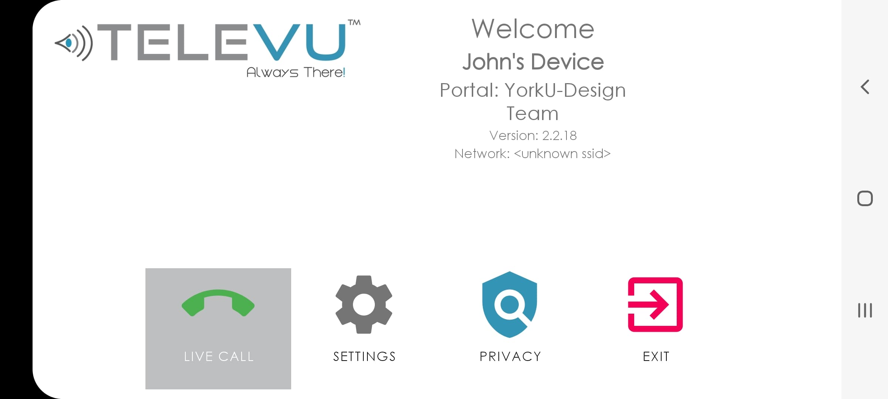
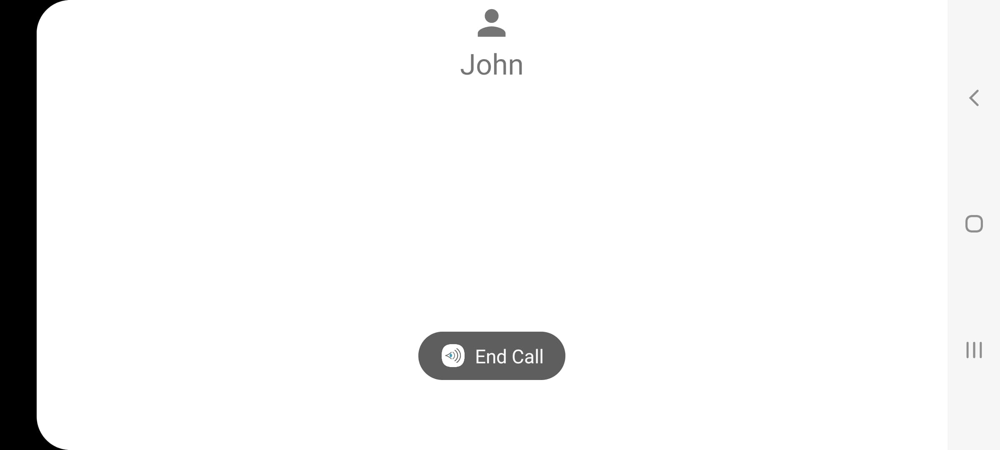
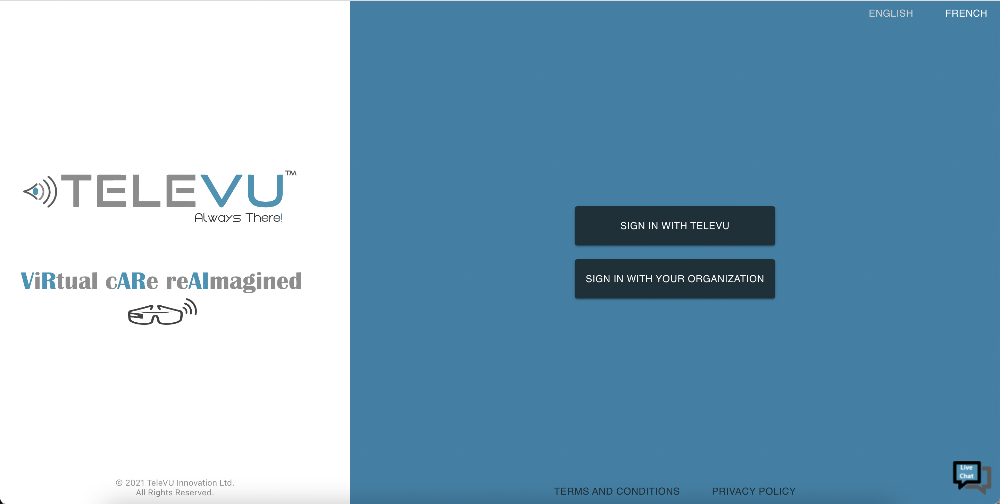
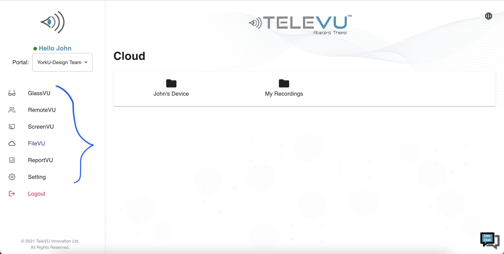
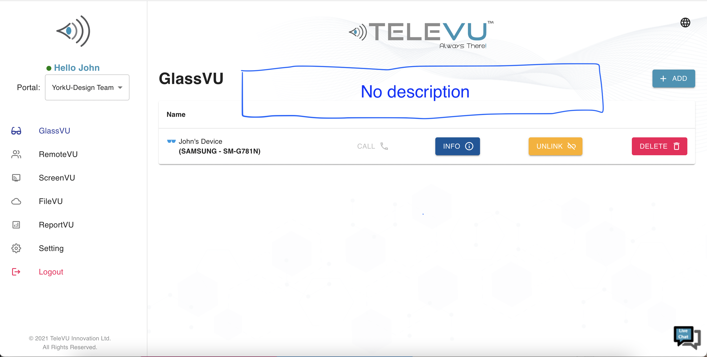
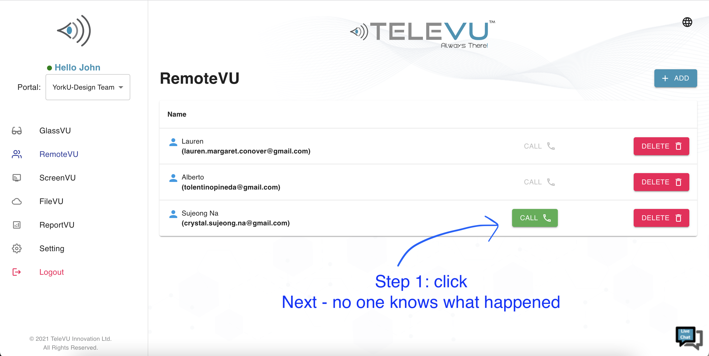
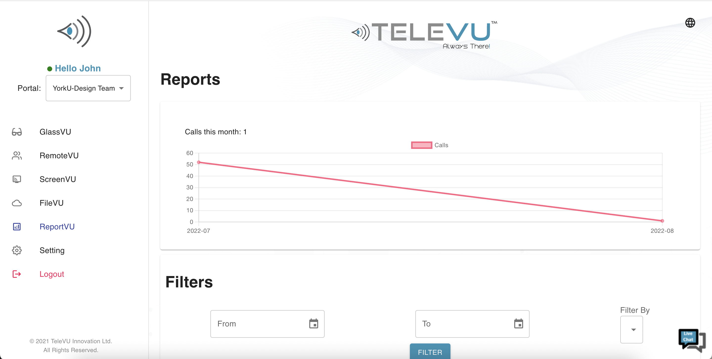

Hospitals here in Canada are overwhelmed with the number of patients.
The press have continuously addressed the situation in the hospitals, but the situation does not seem to get better.
Hospital Situation in Canada
Hospital At Issue here in Canada
...so there is this company that wanted to help the medical staff by using its own technology (a computer software and electronically-charged glasses) connecting the clinicians to the patients virtually when and where the help is needed...
ABOUT THE COMPANY
TeleVU Innovations Inc. is a telecommunication corporation that connects the clinicians and the patients on a remote-basis to reduce the wait times and to offer sooner medical assistance as much as possible.
TeleVU Innovations Inc. offers two different products that are connected to each other.
One is the access to the desktop website. This is usually given to the clinicians. They can talk to the other clinicians or directly to the patients while using the desktop PC. While using the website on the desktop PC, you can call other clinicians, patients, take screenshots during the remote session, record the remote session, replay the recorded videos for later-use, and control the smart glasses as needed.
The other product is the service in glasses. The glasses are called the Smart Glass. It is just like a pair of glasses that you can use every day (if you ever wear the glasses), but it has a special communication feature being built-in the glasses itself. It feels like you are the Iron Man, but instead of using the helmet to talk to others, you are using the glasses. These smart glasses are usually used by the frontline clinicians such as Emergency Response Team, nurses or guardians who directly interact with the patients to provide the care.


TeleVU Smart Glass application on Mobile environmentTeleVU Smart Glass In-Call Session on Mobile environment
“
TeleVU Suite is used in the following cases!
“
Emergency Response Team
During the emergency situation, ERT staffs can use this to connect to the clinicians to offer immediate medical assistant to the patients at the site before they escort the patients to the designated hospital.
Rehabilitation
When the professional medical staff is physically absent but is still available to treat a patient remotely, TeleVU communication tool comes useful to connect between the assistant and the practitioner.
Surgeons
There are times that surgeons in the surgery rooms need to exchange their opinion on how to treat the patient during the session. For many reasons, it is difficult to connect other surgeons during the session. On the other hand, TeleVU technology allows them to stay connected whenever needed.
ABOUT THE PROJECT
Category
UX Design
Duration of Time
2 Months (June 2022 ~ August 2022)
My Role
Lead UX Researcher
Tools Used
Figma, Miro & Google Spreadsheet
PROJECT JOURNEY
5 Stages of UX Design Process
Project Brief
This was a real-world project that was arranged by one of the accredited universities here in Toronto.
The client, for this project, is the CEO of TeleVU Innovations Inc. and we were requested to re-design a product that already exists to make it better.
Assumptions - The Client
≪ Video-Conference Session ≫
Menu layout is not oganized
Icons are not organized
The Team as Designers
As a team of designers, we had the responsibility to make the user experience for this web portal better. Although the primary responsibility and the major point of this project was focused on the video-conference session window, the client had asked us to expand our capability to the entire web portal if possible. In this project, he has not asked specifically anything on revising an existing feature or creating a new feature on the mobile environment for the smart glasses, so we needed to find out where the issues are arising from only based on the web portal.
My team and I needed to conduct a qualitative and a quantitative research to recruit appropriate participants to hear their opinions, but before that, we needed to know what we are offering the participants for a test. Therefore, we had conducted the test to explore the tools on our own first.
Assumptions that we had
While we were exploring the tool, we have noted on what we've learnt and experienced along the way.
The following are our assumptions:
Video-Conference Session
Navigation
The navigation menu in Video-Conference Session
The navigation menu for the smart glass (which was allowed to be
controlled by the clinicians who use the desktop PC) was located on
the complete left side of the session window whereas the nagivation
menu for the desktop PC (for the control of additional functions
besides the smart glasses themselves) was located on the top of the
session window.
Icons and Layouts
Video-Conference Session
It was clear that some of the icons were similar in functions and
more frequently used compared to some other icons that were
different and not-so-important. Though, it seemed like the
priorities nor the industry convention were not respected when those
features were first created and been implemented.
Interactivity
Video-Conference Session
A) the web portal does not acknowledge the people whether the
video-session is loading or not when the clinicians request to
initiate or join the video session
B) the video session supports recording feature during the call, but
the message is excessively enlarged in the screen.
C) when the clinicians decide to terminate the video session, the
host has an option to stop the recording as well. However, the video
session does not inform where the user can find the recorded video
in another menu from the software itself.
Login Process
Two-Step Login Process
 Login Process
The clinicians can only log-in either using TeleVU credentials or
using the credentials from your organization,
but it is still unclear which one they should use.
Registration Page
Registration Page Missing
The people who were interested in using the product were given an
option to log into the service, but there was no way that they could
register to create their own account themselves.
Main Navigation
Menu names

Main Navigation
The names for each menu did not follow the industry standard. They
had a menu where the clinicians could register a new device to their
account to use the service whenever they wish to; they had a menu
where they can reach out to others; and they had a menu where they
can browse the history. On the other hand, the names for each menu
were called as "RemoteVU", "GlassVU" or "ReportVU".
Page Description
 Main Navigation
The clinicians could click on each menu. When the names for each
menu were confusing, there was no description on what the clinicians
can do on each page. My team and I assumed that this would even
delay their time in reaching out the patients because they need to
know how to use the tool first, and it is possible that they might
need to spend a significant number of hours just to get their feet
wet first.
Devices
Information on Registered Device
Information on Registered Device
From the main nagivation page, a couple of pages displayed lists of
smart glasses devices that were associated with a particular
clinician's account. In some ways, the people could check some level
of information regarding the device. On the other hand, not all the
information was clear to us other than the names of each device and
to whom the devices belong to or in the possession of.
Connection status on Individual Device
 Connectivity
From the information, we were able to notice that there was a button
to initiate a call to the other person who has the device. Though,
it was unclear how to initiate the call from the Desktop PC because
we couldn't understand when the button is activated and ready for
the call or not. From here, we have assumed that some of the
clinicians might as well just give up on using the product.
History
Missing Important Information

History
This page had only contained some information such as dates and
duration of the call. Some critical information such as who called
whom, how many people were involved in the call, whether the session
was recorded or not, what is the summary in the call, etc. were all
missing. From this page, we've assumed that the history page might
not actually be useful to the clinicians because the history page
does not contain the practically useful information prior to
treating a patient.
Tasks Done
After we finished exploring the client's product and have understood what we needed to focus on, my teammates and I had done the following tasks for the research part:
User Interview
Competitive Analysis
User Journey Map
Wireframing & Prototyping
The Goal
The mission objective for this project was to redesign the existing interface of the product to make it more intuitive and convenient for the medical professionals when in use.
DESIGN OVERVIEW
From how the original version looked like...
Original GlassVU
Original ReportVU
Original Video Conference Page
...to how it gets changed.
Redesigned GlassVU
Redesigned ReportVU
Redesigned Video Conference Page
The Design Process
« Understand »
Research
For the research part, we have conducted two different types of research:
A) interviews (both in-person and zoom)
B) competitive platform analysis (by comparing the client's product to other well-established products)
We have conducted the interviews and compared the client's product to another well-known products for platform analysis as well as follows:
Zoom Interview
Competitive Analysis on Google via Miro
iSee TeleVU Web Application Affinity Mapping
User Challenges We Knew
From the research part, we have understood that the clinicians were also seeking for a chance to provide the company a bit of feedback on the company's product. If there was anything, they were always overwhelmed with the number of patients which did not leave them a moment to speak up for themselves until we have reached out to them.
Lessons Learned
Insights
Login Page
The login process needs to be simplified.
The clinicians have pointed out that the login process needs to be
simplified.
What did we learn?
My team and I have learnt that the login process was not as
confusing to the clinicians who were interested in using the
service. In fact, the client offers tutorial to the customers
before the customers can practically use the service; therefore,
the clinicians understand how to login.
On the other hand, the client's customers still did not like the
fact that the login was in two-steps. Basically, they felt that it
was not necessary to click the "Sign in with another organization"
button if they were still supposed to write their login id and
password in the following screen. They said that one-step login
process will do.
Navigation Menu
It was difficult to navigate from one menu to another for the
clinicians whilst they tried to engage with the product because
the product was not interactive enough.
What did we learn?
Fact:
Unlike what we had assumed, the client's customers did not
encounter as much difficulty in navigating through the menus due
to the tutorial. On the other hand, they still admitted that it
takes time to be familiar with the menu names.
Video-Conference Session
The layout in the video-conference session was confusing that the
clinicians struggled to stay engaged in the calls.
What did we learn?
The client's customers have confirmed that the buttons need to be
re-organized. Since they already knew that one layer of menu is
meant to control the Desktop PC and the other layer of menu is for
the mobile screen that's also displayed on the Desktop PC, they
were getting used to the controls. However, they have mentioned
that there needs to be some work done in organization.
History
We assumed that the essential information for the clinicians were
missing in the history page.
What we have learnt:
The clinicians only wanted to be able to modify and custom-save
the recorded videos that are from the previous sessions.
The Next Step
After the discovery, a few user personas were created with the user flow and user journey map to meet the needs and goals of the users.
While creating the user persona and the user journey map, we needed to think about the design.
We did not want to simply draw on a white board but thought of design that accommodates the following considerations:
Point 1 I Convenience based on Frequency
From the meetings with the client, we have understood that the client wanted a major change on the video-conference session window. Those changes needed to accommodate what the customers wanted to see while they were in the calling session.
From the research, we have understood that the video session was not convenient to use. Therefore, we have constantly asked each other what it means to feel "convenient", especially for the client's product.
Considering the results of competitive analysis, we have reached the conclusion that the features that is most used needs to be located in a place of the web page screen where it is well-spotted.
Point 2 I Ease on Navigation
My team and I believed that it is important to remind the users regarding what they can do after they complete a task, especially if the task is a part of a series of actions.
Point 3 I Interactivity
Last but not least, my teammates and I have also continuously asked how we can make the product to be more engaging to the clinicians who use the client's product and let them know what they are doing if they decided to do anything. For example, if a clinician clicks "call" button, the product should at least notify the clinician that it is loading the video-calling session.
« Design »
Explore Style
The brand tone for TeleVU Incorporation is agile but but clean as well as neat. Therefore, we have been consistent with the blue colour, which was the primary colour for the design, but we've also mixed with grey, red, and green as supplementary colours.
Visualize
Pages for the web app were sketched based on the user flow to get a better sense of how they would look and after the sketches were finalized.
Here are the rough draft of sketches...
Low-fidelity for History Page
Low-fidelity for Video-Conference Page
Low-fidelity for GlassVU Page
« Keep track of styles »
All visual and UI elements must be properly documented in a style guide, in order to ensure consistency across all breakpoints.
Design Guide for Logos
Design Guide for Buttons
Design Guide for Colours
....to come up with the high-fidelity pages for the product....
Redesigned RemoteVU
Redesigned Video-conference
Redesigned Login
Finalize
...and to the delivery of the final product.
Prototype Demo
Final Product Teaser Video
...including the smartphone version!
High-Fidelity Mobile Version (Portrait)
High-Fidelity Mobile Version (Landscape)
Conclusion
My teammates and I believed that all these changes will improve the way that the clinicians use the product and will make them feel pleased to use the features more frequently than the past.
However, we needed to know that what we've intended was working as we've intended to be. In order to find out, we have decided to put it to a test.
User Testing Feedback
Here are the comments from the participants who have offered their time to give us more feedback on the new design.
Feedback for iSee Web Application Settings & Navigation
Feedback for iSee Web Application History
Feedback for iSee Web Application RemoteVU
Success Ratio: 95%
Average rating: 4.5 out of 5 stars
Note from the customers:
"the word 'add' is not straight clear."
Success Ratio: 95%
Average rating: 4.5 out of 5 stars
Note from the customers:
"everything is so intuitive."
Success Ratio: 95%
Average rating: 4.5 out of 5 stars
Note from the customers:
"everything was very straight-forward."
Reflection
From the user-testing phase, we were confirmed that things were working as we have intended them to be, and we were very pleased to see the outcome.
Looking back to this project, I feel that not a single phase was easy to me. On the first day that my teammates and I were scheduled to have the first meeting with the client, I was scared and nervous to meet the client or talk about this project even though I was not the only one to feel that way. However, as the project progresses, we've learnt that the client was such a gentleman who has communicated with us very well and was understanding.
The next challenge was the research phase.
It was not easy to recruit the participants as the majority were busy clinicians afterall.
We were not sure if we could arrange an interview with them and were also told that it has become very difficult to get a hold of any of them due to the situation in the clinics or in the hospitals.
Still, we did not give up but have decided to send out questions to whoever was available to respond. In fact, we have ended up interviewing some medical students, too.
Last challenge was the teamwork.
Since we were all working asynchronously other than gathering up for team mmeting or meeting with our client, the progress were slow at times or we were at risk to lose the track of who did what.
To prevent this, we've kept our work on a design program called Figma, Google Spreadsheet, Google Excel, and Miro altogether.
We left messages and comments using Discord platform as well to keep each other up to date.
The entire course-work demanded a huge amount of work in such short amount of time. On the other hand, I was very happy to see that a) the redesign worked out very well, b) my teammates and the client have understood the importance of the research, and c) I have learned some valuable designing tools such as Figma.
Final Note
If there is anything that I wish things were better:
I still feel that it was unfortunate for us to miss the chance to learn further regarding the client company's business structure.
I still hope that he allows some tiny changes such as modifting the titles for videos that are saved to the history section after the users are finished with recording the session for the convenience of the users, if the client chooses to work with another team of designers in the next opportunity.